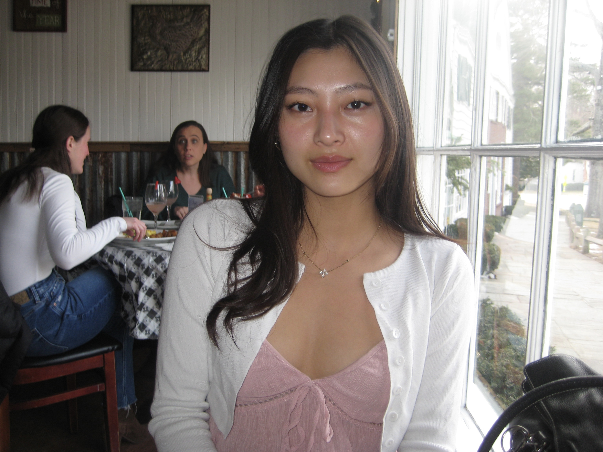
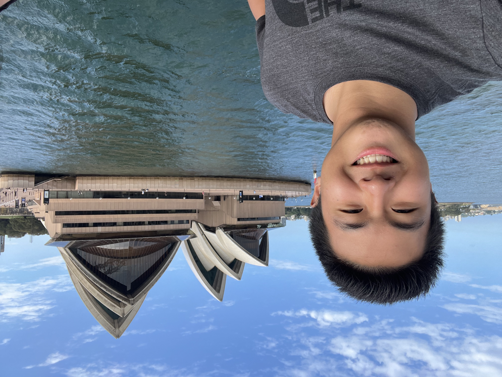

Principal Investigator
Hwan Kim, Ph.D.

I am a microbiologist interested in discovering how pathogenic microbial organisms utilize diverse tools to exploit and evade innate and adaptive immune defense mechanisms to survive in different environments, such as mammalian hosts and arthropod vectors. I enjoy reading historical original research articles with hand-drawn figures and tables! In these articles, the authors show unmatched inspiration for science, in-depth insights into discovering unknowns, and far-reaching visions that continue to impact multiple aspects of science, even after decades of the initial discovery. I also enjoy reading scientific thriller books, playing video and board games, and traveling (realizing that I have not done much of these in recent years...sigh...).
E-mail: hwan.kim at stonybrook.edu
I am a microbiologist interested in discovering how pathogenic microbial organisms utilize diverse tools to exploit and evade innate and adaptive immune defense mechanisms to survive in different environments, such as mammalian hosts and arthropod vectors. I enjoy reading historical original research articles with hand-drawn figures and tables! In these articles, the authors show unmatched inspiration for science, in-depth insights into discovering unknowns, and far-reaching visions that continue to impact multiple aspects of science, even after decades of the initial discovery. I also enjoy reading scientific thriller books, playing video and board games, and traveling (realizing that I have not done much of these in recent years...sigh...).
Research Assistant Professor
Ilia Rochlin, Ph.D.
Center for Infectious Diseases

I was trained as an entomologist and epidemiologist at Cornell University and Touro College, respectively. I have worked at various capacities as a bacteriologist through laboratory director for state and local public health agencies investigating mosquito and tick-borne diseases within the eco-epidemiological framework as a complex system of interacting environmental, social, and biological factors. My work has encompassed a broad range of subjects from molecular biology and virology to entomology, ecology, and sociology. The common denominator among these diverse interests is the focus on public health driven by a quantitative approach and statistical modeling. My professional interests overlap with my long standing fascination with "old fashioned" natural history and pursuits in macrophotography.
E-mail: ilia.rochlin at stonybrook.edu
I was trained as an entomologist and epidemiologist at Cornell University and Touro College, respectively. I have worked at various capacities as a bacteriologist through laboratory director for state and local public health agencies investigating mosquito and tick-borne diseases within the eco-epidemiological framework as a complex system of interacting environmental, social, and biological factors. My work has encompassed a broad range of subjects from molecular biology and virology to entomology, ecology, and sociology. The common denominator among these diverse interests is the focus on public health driven by a quantitative approach and statistical modeling. My professional interests overlap with my long standing fascination with "old fashioned" natural history and pursuits in macrophotography.
Graduate Students
Luke Helminiak, B.S.
Molecular Genetics and Microbiology

I received my B.S. in Molecular Biology and Biochemistry from the University of Wisconsin Eau Claire. I then went and worked at the Next Generation Sequencing Laboratory at the Mayo Clinic in Rochester MN. For my dissertation, I study Rickettsia pathogenesis with a focus on hemolysin secretion and function. Following my graduation, I aim to work on infectious disease diagnostics and have the opportunity to have a direct role in helping patients. Thus, my goal is to work as a Laboratory Director in a clinical microbiology laboratory. I have a love of sports, and enjoy running, basketball, snowboarding, and archery. During my down time, I love listening to music and watching movies.
E-mail: luke.helminiak at stonybrook.edu
I received my B.S. in Molecular Biology and Biochemistry from the University of Wisconsin Eau Claire. I then went and worked at the Next Generation Sequencing Laboratory at the Mayo Clinic in Rochester MN. For my dissertation, I study Rickettsia pathogenesis with a focus on hemolysin secretion and function. Following my graduation, I aim to work on infectious disease diagnostics and have the opportunity to have a direct role in helping patients. Thus, my goal is to work as a Laboratory Director in a clinical microbiology laboratory. I have a love of sports, and enjoy running, basketball, snowboarding, and archery. During my down time, I love listening to music and watching movies.
Smruti Mishra, M.S.
Molecular Genetics and Microbiology

I am from Bhubaneshwar, India. I did my bachelor's in Dental Surgery from Pravara Institute of Medical Sciences, India and my MS in Molecular Biosciences from Albany College of Pharmacy and Health Sciences. While at ACPHS I worked in Dr. Meenakshi Malik's lab using an in vitro bioreactor infection model to study the evolution of daptomycin resistance in methicillin-resistant Staphylococcus aureus. For my PhD thesis I am working on understanding the contribution of polysaccharide synthesis operon on tick-borne rickettsiosis as well as its role in shaping host immunity. My research interests lie in the field of bacterial pathogenesis and infectious diseases, specifically in understanding the host-pathogen interactions and molecular mechanisms involved in the same. In my free time I love travelling and exploring new places with my husband and learning to cook new Indian dishes. I enjoy watching movies and dancing as well.
E-mail: smruti.mishra at stonybrook.edu
I am from Bhubaneshwar, India. I did my bachelor's in Dental Surgery from Pravara Institute of Medical Sciences, India and my MS in Molecular Biosciences from Albany College of Pharmacy and Health Sciences. While at ACPHS I worked in Dr. Meenakshi Malik's lab using an in vitro bioreactor infection model to study the evolution of daptomycin resistance in methicillin-resistant Staphylococcus aureus. For my PhD thesis I am working on understanding the contribution of polysaccharide synthesis operon on tick-borne rickettsiosis as well as its role in shaping host immunity. My research interests lie in the field of bacterial pathogenesis and infectious diseases, specifically in understanding the host-pathogen interactions and molecular mechanisms involved in the same. In my free time I love travelling and exploring new places with my husband and learning to cook new Indian dishes. I enjoy watching movies and dancing as well.
Lab Manager
Hara Seo, B.S.

I have an interesting academic background where I fell in love with Music in my youth but learned the beauty of Chemistry as an undergraduate student. Interestingly, this unusual learning experience helped me raise two little monsters and sourdough starters! Over time, I became a microbiologist by self-teaching about the mysteries of sourdough baking. I started my career as an administrative assistant to the director of Howard T. Ricketts Laboratory at Argonne National Laboratory. Since moving to Stony Brook, I am learning whole new knowledge about tick-borne Rickettsia. I am quite excited about this new journey! And, I enjoy baking, listening music, and spending time with one big and two little monsters.
E-mail: hara.seo at stonybrook.edu
I have an interesting academic background where I fell in love with Music in my youth but learned the beauty of Chemistry as an undergraduate student. Interestingly, this unusual learning experience helped me raise two little monsters and sourdough starters! Over time, I became a microbiologist by self-teaching about the mysteries of sourdough baking. I started my career as an administrative assistant to the director of Howard T. Ricketts Laboratory at Argonne National Laboratory. Since moving to Stony Brook, I am learning whole new knowledge about tick-borne Rickettsia. I am quite excited about this new journey! And, I enjoy baking, listening music, and spending time with one big and two little monsters.
Research Technicians
Ana Barreira, B.S.

I received my B.S. in Biology at Stony Brook University. I worked in the Kim lab during undergrad and hope to continue my research in my time here. I am planning on attending medical school next year. In my free time I enjoy crocheting, baking and traveling.
E-mail: ana.barreira at stonybrook.edu
I received my B.S. in Biology at Stony Brook University. I worked in the Kim lab during undergrad and hope to continue my research in my time here. I am planning on attending medical school next year. In my free time I enjoy crocheting, baking and traveling.
Yarim Lee, M.S.

My biggest passion is science research! I have been doing research since high school and have not stopped since. My first research project investigated the pi-stacking interactions between amyloid proteins that are hallmarks of Alzheimer's Disease. After studying drug design/delivery tailored to amyloid aggregation, I was able to synthesize a drug candidate that reversed the aggregation effects in vitro. Thanks to this project, MIT named a minor planet after me! I received my Bachelor's in Biology at Columbia and my Master's in Biomedical Research Technologies at Cincinnati Children's Hospital. I am currently aspiring to pursue research in the context of medicine, because translating research done on the benchtop to the patient's bedside is my passion and goal. Due to my background in protein biochemistry (specifically protein aggregation), I am eager to study this phenomenon in any cellular context, as I believe investigating different perspectives can bring answers to our scientific questions. I hope to aid the Kim Lab's efforts to unravel the molecular, genetic, and pathologic mysteries behind Tickborne Rickettsial Disease. My free time is dedicated to my family, as I could not have made strides as a person and scientist without their compassion and care.
E-mail: yarim.lee at stonybrook.edu
My biggest passion is science research! I have been doing research since high school and have not stopped since. My first research project investigated the pi-stacking interactions between amyloid proteins that are hallmarks of Alzheimer's Disease. After studying drug design/delivery tailored to amyloid aggregation, I was able to synthesize a drug candidate that reversed the aggregation effects in vitro. Thanks to this project, MIT named a minor planet after me! I received my Bachelor's in Biology at Columbia and my Master's in Biomedical Research Technologies at Cincinnati Children's Hospital. I am currently aspiring to pursue research in the context of medicine, because translating research done on the benchtop to the patient's bedside is my passion and goal. Due to my background in protein biochemistry (specifically protein aggregation), I am eager to study this phenomenon in any cellular context, as I believe investigating different perspectives can bring answers to our scientific questions. I hope to aid the Kim Lab's efforts to unravel the molecular, genetic, and pathologic mysteries behind Tickborne Rickettsial Disease. My free time is dedicated to my family, as I could not have made strides as a person and scientist without their compassion and care.
Undergraduate Research Assistant
Yeonwoo Lee
I'm a second-year student in the bachelors/DDS program at Stony Brook! As a Biology major and Studio-Art minor, I am passionate about the intersections between science and artistry which fuel my interest in dentistry as a career. In Dr. Kim's lab, I hope to learn the deeper intricacies of biology through hands-on microbiology research and direct exposure to constant growing knowledge, and also be inspired by accomplished and dedicated superiors. You can either find me painting at Staller, starting a new craft project in my dorm, studying at the library, or lifting at the campus rec.
E-mail: yeonwoo.lee at stonybrook.edu
I'm a second-year student in the bachelors/DDS program at Stony Brook! As a Biology major and Studio-Art minor, I am passionate about the intersections between science and artistry which fuel my interest in dentistry as a career. In Dr. Kim's lab, I hope to learn the deeper intricacies of biology through hands-on microbiology research and direct exposure to constant growing knowledge, and also be inspired by accomplished and dedicated superiors. You can either find me painting at Staller, starting a new craft project in my dorm, studying at the library, or lifting at the campus rec.
Nathaniel Wu
I'm a sophomore Biology student at Stony Brook University in the 8-year BS/DDS program and a lifelong science enthusiast! Ever since I was little, I've been fascinated by how research helps us learn about the unknown, so joining Dr. Kim's lab was an easy decision. Right now, I plan to go into pediatric dentistry or oral surgery, and I look forward to the many opportunities ahead! When I have free time, I love to play volleyball, bake, bike, and travel the world!
E-mail: nathaniel.wu at stonybrook.edu
I'm a sophomore Biology student at Stony Brook University in the 8-year BS/DDS program and a lifelong science enthusiast! Ever since I was little, I've been fascinated by how research helps us learn about the unknown, so joining Dr. Kim's lab was an easy decision. Right now, I plan to go into pediatric dentistry or oral surgery, and I look forward to the many opportunities ahead! When I have free time, I love to play volleyball, bake, bike, and travel the world!